| 日付 | 2008年9月14日（日） - 2008年9月15日（月） | ||||
|---|---|---|---|---|---|
| 山域 | 東北の山 | ||||
| メンバー | 単独 | ||||
| 山行形態 | 1泊2日無人小屋泊 | ||||
| アクセス | 電車、バス | ||||
| ルート (Map) |
|
2日目
今夜小屋に泊まったのは17人グループ、8人グループと自分1人の26人。
大きい小屋だからよかったものの、小さい小屋だったら大混雑だっただろう。
団体登山者が立ち去ったあとは一気に静かになった。
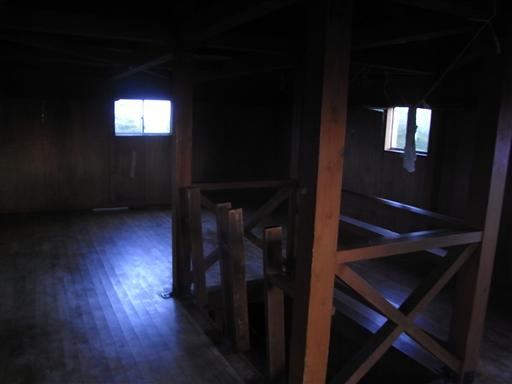
5:29 準備をして出発。
ちょうど日の出の時間だ。
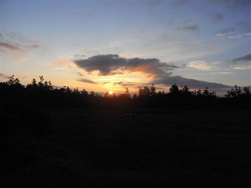
辺りの草木は日を浴びて赤く染まっている。
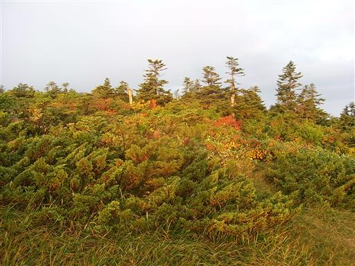
山上に広がる湿原は全くもって広い。
どこまでも続く湿原、その中の一本の木道をただ1人歩いていく。
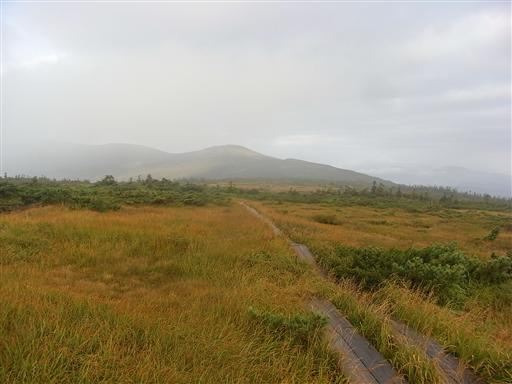
振り返ると、背後にもだだっ広い湿原が続いている。
周りには誰一人おらず、辺りは静寂に包まれている。
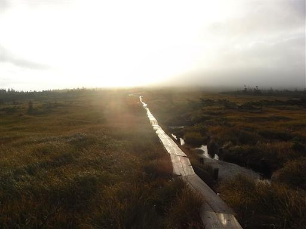
しばらく歩き続けると、ようやく目の前に樹木に覆われた盛り上がりが見えてきた。
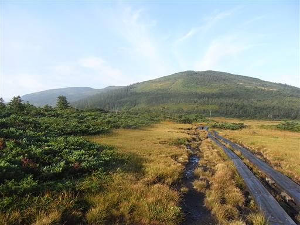
なだらかな坂を登っていく。
左のほうに見える西吾妻山は残念ながら雲に隠れている。
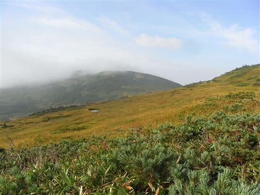
人形石と呼ばれるところに到着する。
石の形が人形に似ているのだろうか？
高台になっているので非常に眺めがよい。
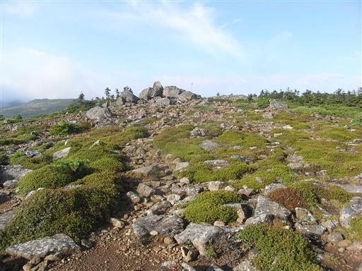
沢を横切るところに小さな水場がある。ここも水量は豊富。
水はたくさんあるので補給はせずに、一口だけ飲む。
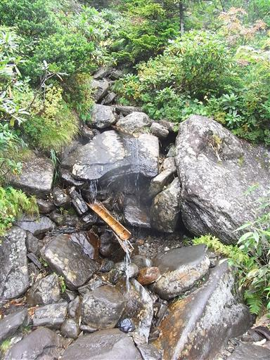
水場から一登りすると、大きく開けた平地に到達する。
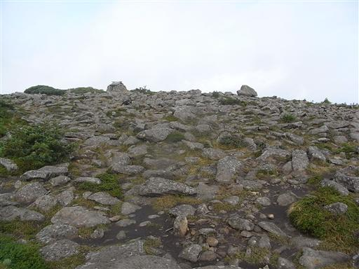
広場の一角には吾妻神社が建てられている。
石垣に囲まれた非常に小さな神社だ。
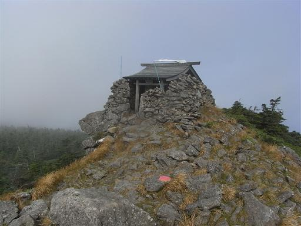
ここから西吾妻山まではすぐだが、進む方向には雲が広がっている。
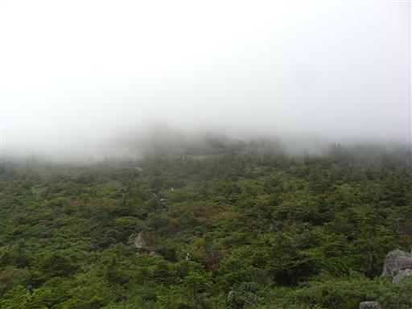
オオシラビソの木がたくさんの実をつけている。
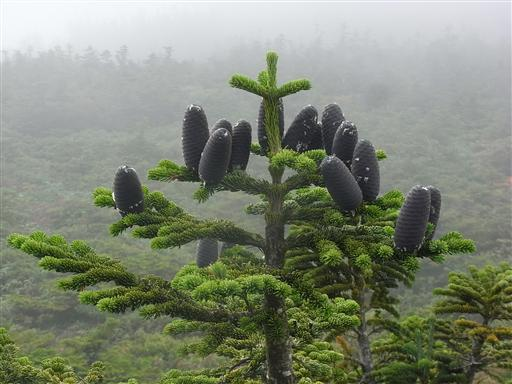
9:10 西吾妻山山頂到着。標高2035m。
広大な吾妻連峰の最高峰だが、非常に狭い山頂で展望はない。
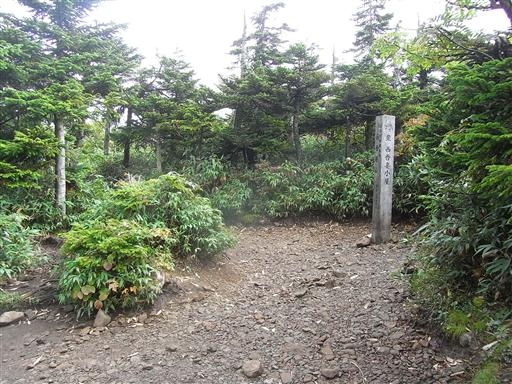
山頂からは樹木に覆われた道を下っていく。
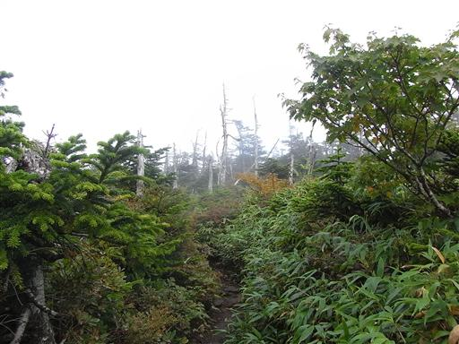
山頂から少し下った小平地に西吾妻小屋が建っている。
中を覗いてみたが、こちらも避難小屋にしては非常に大きい。
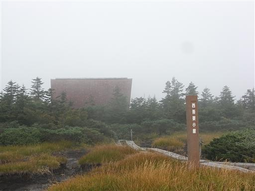
吾妻山の最も西にある西大巓山頂に到着。
ここから歩く下山道は余りガイドブックに載っていなかったので少々不安だったが、
山頂付近で出会った単独行者がその道を登って来たというので一安心。
コケで非常に滑りやすいとの事だが、歩いて来た人がいるのであれば大丈夫だろう。
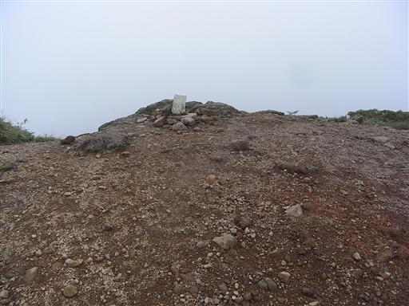
下山道は山上に広がる湿原地帯とは打って変わって、
斜面には鬱蒼とした森が広がっている。
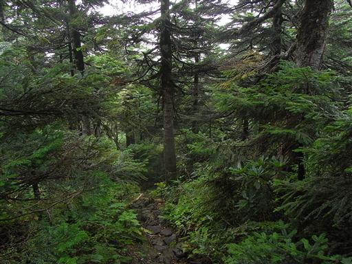
登山道のあちらこちらに転がっている石は皆コケに覆われている。
確かに滑りやすい道だ。
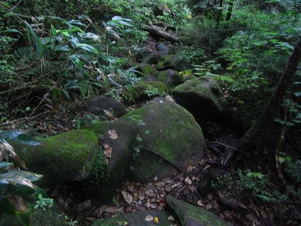
周りに広がる樹木もコケに覆われている。
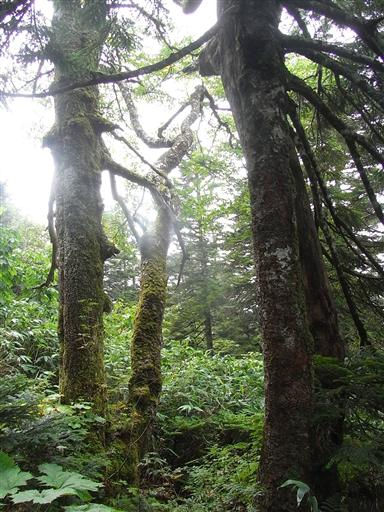
沢に架かる木橋を渡る。
今にも折れそうで非常に怖い。しかもよく滑る。
水量は多くないので、直接沢を渡った方が安全そうだ。
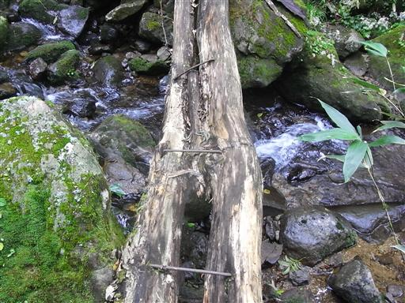
布滝に到着。小さな滝が何段にも連なっている。

布滝からは他の登山道と合流し、遊歩道のような歩きやすい道になる。
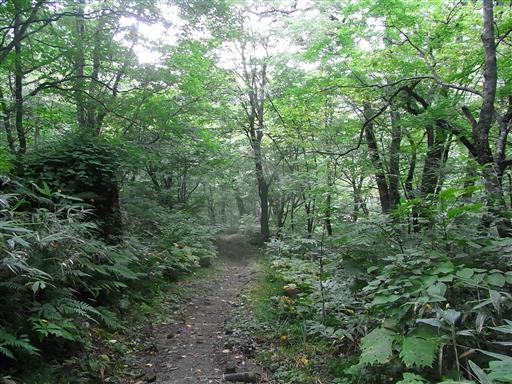
登山道入口に到着。
「熊さん人間に注意」という謎の看板が立つ。
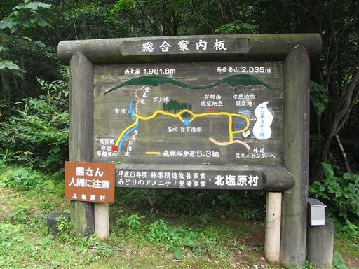
ここは駐車場になっていて、ここから車道が始まるが、
幸い車道に沿って遊歩道が整備されているようだ。
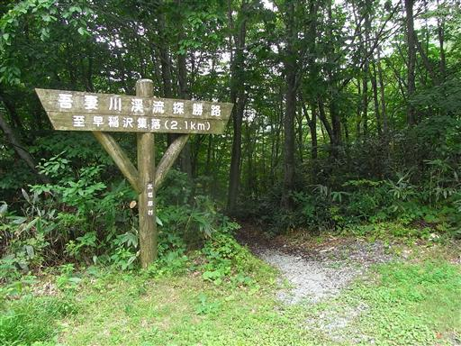
遊歩道は吾妻川に沿って付けられている。
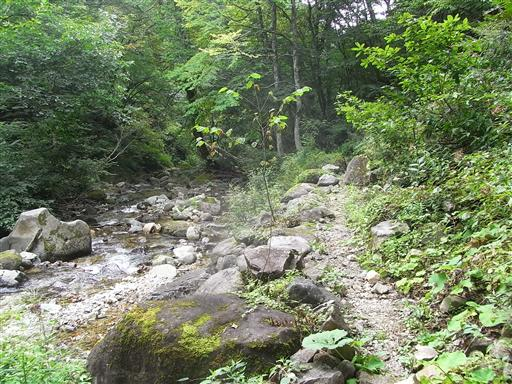
何本の木が寄り集まっているのか、非常に大きな木がそびえている。
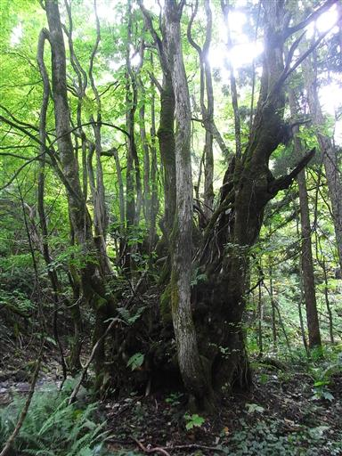
13:15 早稲沢バス停到着。標高850m。
簡素な温泉街がある。
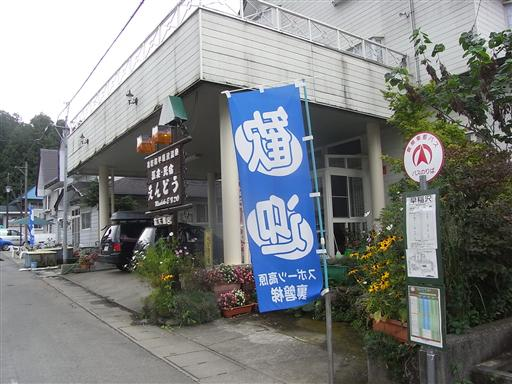
バス停近くにある小さな神社。
草が繁茂し踏み跡がないので、日常的に参っている人はいないのだろう。
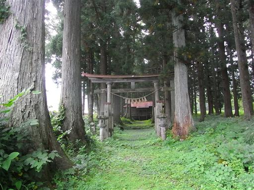
まだ時間に余裕があるので、裏磐梯きっての観光地・五色沼に寄っていく事にする。
一切経山の近くにあった五色沼とは別の沼。
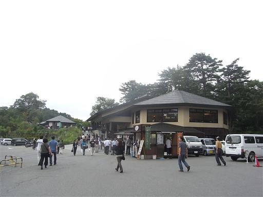
沼には多くのボートが浮かんでいる。
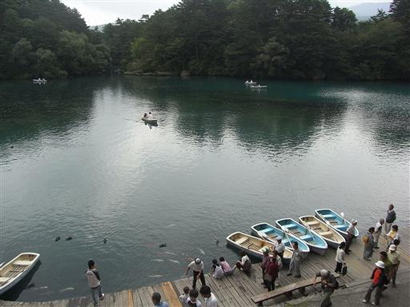
沼の背後に聳えているのは磐梯山。
裏磐梯はこの辺りでは一番の観光地で、風光明媚なところだ。
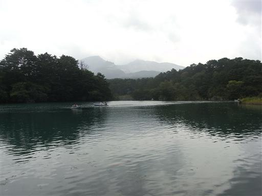
五色沼は様々な色をした沼がたくさんあり、その沼を縫うように遊歩道が設けられている。
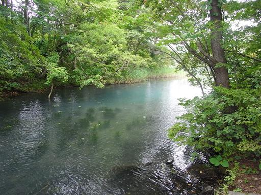
高校の修学旅行で五色沼に来たことは微かに覚えているので、ここに来るのはおそらく2度目。
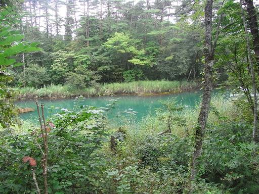
当時、沼の美しさにはあまり反応せず、五色に彩られているなんてインチキだと思っていた記憶があるが
改めて今見てみると、なかなかきれいだ。
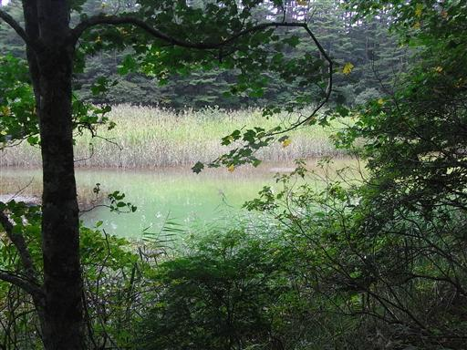
沼と沼の間には川が流れているので、いくつかの沼は繋がっているようだ。
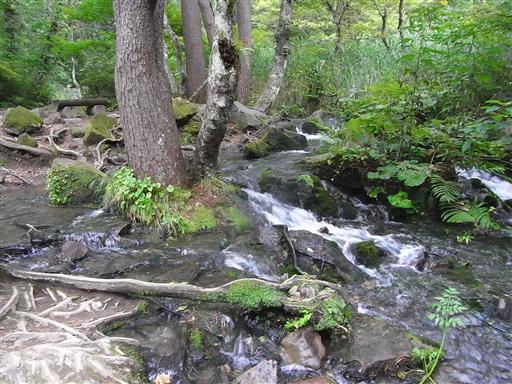
これらの沼の色は水中に含まれる鉱物質の影響らしい。
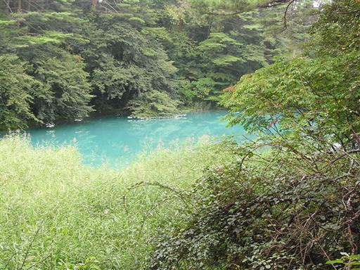
裏磐梯の観光を終え、猪苗代駅に到着。
連休最終日で混雑した列車に乗って東京に向かう。
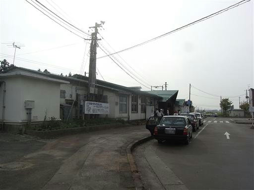